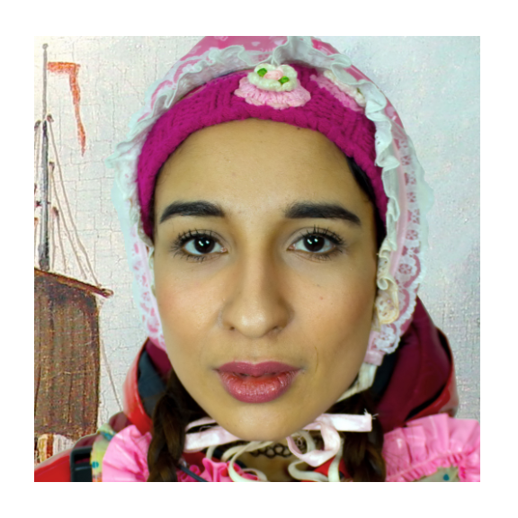

1. ABSTRACT
Conversational Speech Synthesis (CSS) is a key task in the user-agent interaction area, aiming to generate more expressive and empathetic speech for users.
However, it is well-known that “listening” and “gazing” play crucial roles in conveying emotions during real-world interpersonal communication.
Existing CSS research is limited to perceiving only text and speech within the dialogue context, which restricts its effectiveness. Moreover, speech-only responses further constrain the interactive experience.
To address these limitations, we introduce a Conversational Speech-Visual Synthesis (CSVS) task as an extension of traditional CSS.
By leveraging multimodal dialogue context, it provides users with coherent audiovisual responses. To this end, we develop a CSVS system named UniTalker, which is a unified model that seamlessly integrates multimodal perception and multimodal rendering capabilities.
Specifically, it leverages a large-scale language model to comprehensively understand multimodal cues in the dialogue context, including speaker, text, speech, and the talking-face animations.
After that, it employs multi-task sequence prediction to first infer the target utterance's emotion and then generate empathetic speech and natural talking-face animations.
To ensure that the generated speech-visual content remains consistent in terms of emotion, content, and duration, we introduce three key optimizations:
1) Designing a specialized neural landmark codec to tokenize and reconstruct facial expression sequences.
2) Proposing a bimodal speech-visual hard alignment decoding strategy.
3) Applying emotion-guided rendering during the generation stage.
Comprehensive objective and subjective experiments demonstrate that our model synthesizes more empathetic speech and provides users with more natural and emotionally consistent talking-face animations.
The source code and generated samples are available at: https://github.com/UniTalker/UniTalker.
Sample #1:
| Dialogue History (Ground Truth) | Current Utterance (UniTalker Generated) | ||
|---|---|---|---|
| Speaker A: Hi there, do you watch the NFL? | Speaker B: I love watching the NFL, how about you? | Speaker A: Yes me too. Did you know U of Iowa painted their visitor locker room pink? | Speaker B: Yes I do, I live down the street from the stadium! Ever been to a game there? |
Sample #2:
| Dialogue History (Ground Truth) | Current Utterance (UniTalker Generated) | ||
|---|---|---|---|
| Speaker A: I do but i don't get the chance as much anymore. The patriots are on a role. | Speaker B: Do you know how many teams are on the NFL? | Speaker A: Wow that's a good question, how many? | Speaker B: Did you know that the former running back, Benjarvis Green-Ellis has never fumbled the football in his whole NFL career? |
Sample #3:
| Dialogue History (Ground Truth) | Current Utterance (UniTalker Generated) | ||
|---|---|---|---|
| Speaker A: Yeah i believe it was twice as much. ESPN won an Emmy for the superimposed line for the first downs. | Speaker B: Did you know that an average lifetime earning of an engineer is higher than the average lifetime earning of an NFL player and an average MLB player? | Speaker A: Yes that's an extremely high scoring game. No I did not know that! Did you know that in the 1960's top bowlers made twice as much as top football stars? | Speaker B: Yeah i believe it was twice as much. ESPN won an Emmy for the superimposed line for the first downs. |
Sample #4:
| Dialogue History (Ground Truth) | Current Utterance (UniTalker Generated) | ||
|---|---|---|---|
| Speaker A: Definately! It pays more to be an engineer than an average NFL or MLB player because over a lifetime an engineer ears more than those players. | Speaker B: Well engineers work for a longer time, so it makes sense, did you hear about QB Alex Smith? I think his a great role model to follow. | Speaker A: I didn't hear. What did he do? | Speaker B: He took ap test in high school and entered university as a ujunior. he received a degree in just two years and then began working on a masters degree. |
Sample #5:
| Dialogue History (Ground Truth) | Current Utterance (UniTalker Generated) | ||
|---|---|---|---|
| Speaker A: Oh yeah, those can be good positions, I guess it can happen some day. | Speaker B: I'm sure if they do they will have tracking chips on their shoulder pads like they do now so they can record every move on the field. | Speaker A: That seems bit invasive but I guess all kinds of stats are taken out of those chips. | Speaker B: Yes. They even have chips in the footballs to track velocity. Getting a little too technical I think for a sport. |
Sample #6:
| Dialogue History (Ground Truth) | Current Utterance (UniTalker Generated) | ||
|---|---|---|---|
| Speaker A: I do, I play a fantasy football game, what about you? | Speaker B: I love playing fantasy football. Have played for bout 17 or 18 years now. Did you know that they even have a fantasy league for congress? | Speaker A: I dont really know that but I do know a bit about players QB Macus Mariona is a bad choice, one of the worst QBs in the season. | Speaker B: I agree. I kind of thought he was a little overrated when he was drafted. |
Sample #7:
| Dialogue History (Ground Truth) | Current Utterance (UniTalker Generated) | ||
|---|---|---|---|
| Speaker A: Hi, how are you? How much do you know about the Bible? | Speaker B: Yes I do. It the best selling book of all time. | Speaker A: Did you know that before 1963, it was not uncommon for American students to be required to read from the Bible as part of their elementary education? Times certainly have changed! | Speaker B: My mom told me that Thomas jefferson did not believe in miracles and the resurrection. |
Sample #1:
| UniTalker Generated | |||||
|---|---|---|---|---|---|
| Happy | Angry | Sadness | Disgust | Fear | Surprise |
Sample #2:
| UniTalker Generated | |||||
|---|---|---|---|---|---|
| Happy | Angry | Sadness | Disgust | Fear | Surprise |
| Reference Speech | |||||
| Reference Poritrait | |||||
|  |  |
||||
| UniTalker Generated | |||||